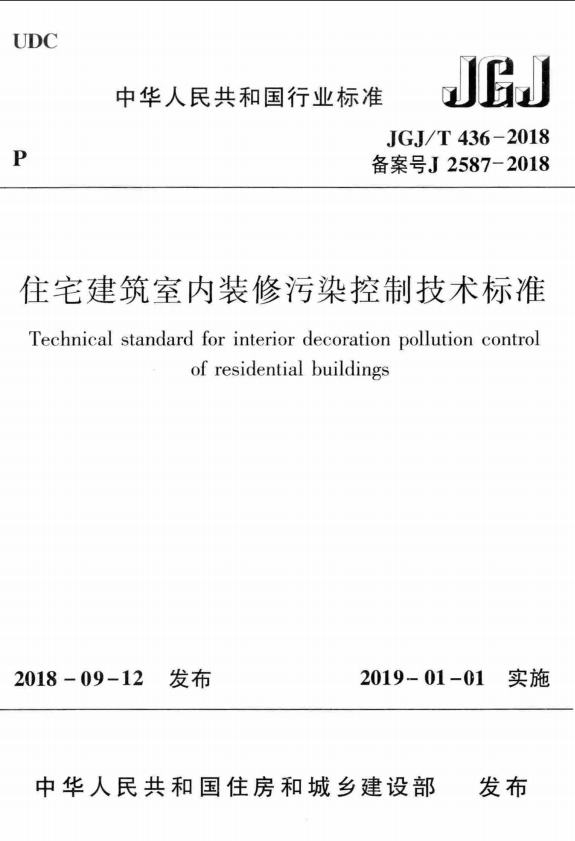
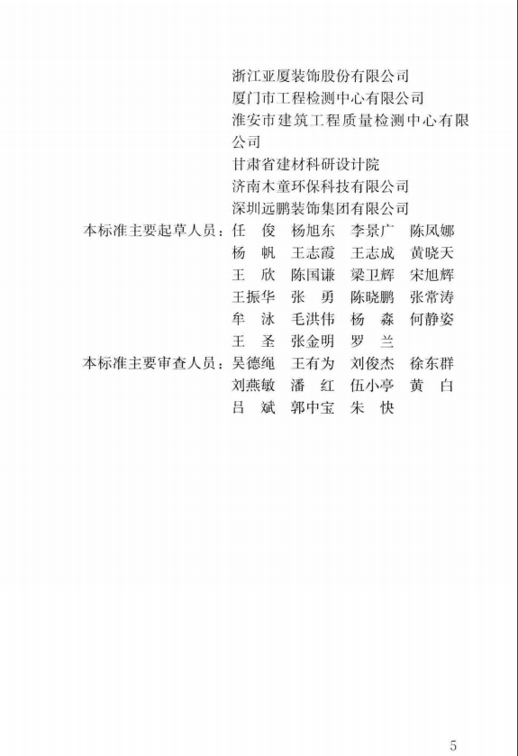
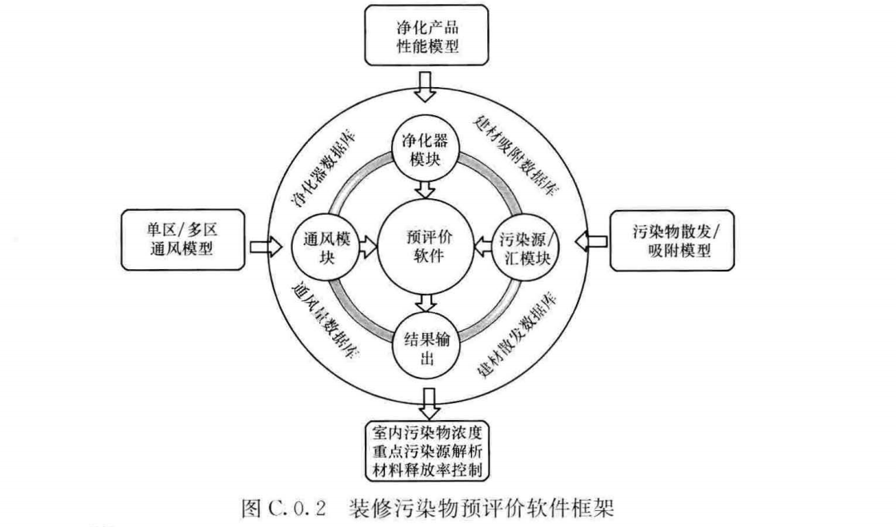
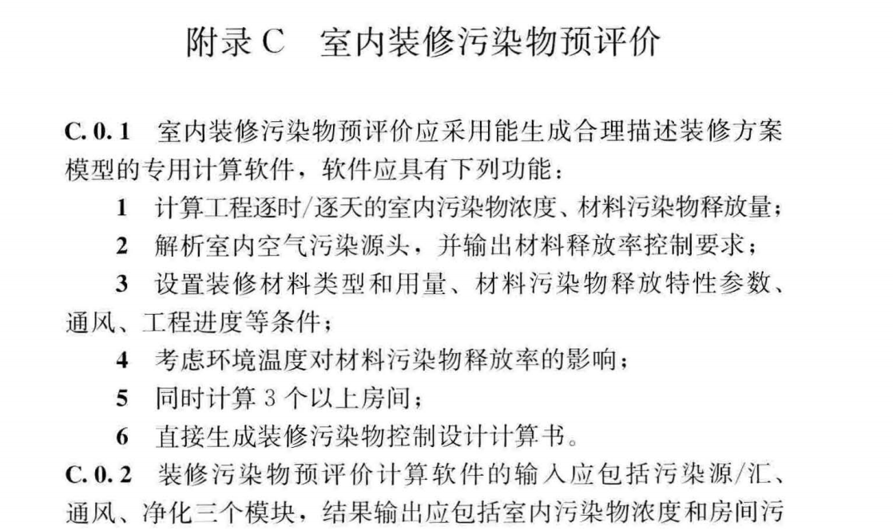

绿色建筑与城市环境国际研究中心
International Research Center for
G
reen
B
uildings &
U
rban
E
nvironment
当前位置：首页 > 学术动态 > 学术会议
梁卫辉副研究员参编《住宅建筑室内装修污染控制技术标准》JGJ/T 436-2018正式发布
发布时间：2018年09月12日
室内装修污染在我国新建建筑中普遍存在，但目前的控制手段主要是依据对装修完成后的后评估结果而展开的，不仅治理整改费用高，效果也十分有限。 为了从源头上避免装修污染，提升建筑室内空气质量，《住宅建筑室内装修污染控制技术标准》被列入2015年工程建设标准规范修订计划， 由深圳市建筑科学研究院股份有限公司和清华大学多年研究积累主导编制， 并会同多家研究院、地产开发商、装饰公司、检测机构等多家单位共同编制修订。
 
2018年9月12日，历经三年时间，《住宅建筑室内装修污染控制技术标准》JGJ/T 436-2018（以下简称“《标准》”）于2018年9月正式发布，自2019年1月1日起实施。 该标准通过广泛调研，并借鉴了国内外相关标准和工程实践经验，创新性的采用了基于提出“装修材料污染物释放率”和“预评价”的室内空气污染控制方法， 为预防和控制住宅装饰装修工程引起的室内环境污染提供了科学合理的依据。其编制水平亦被专家组评定为达到国际领先水平。
我院梁卫辉副研究员从博士期间就开始从事装修污染预评价的研究，所在的课题组与深圳市建筑科学研究院股份有限公司进行了多年的合作， 一起对预评价的理念、方法和实际效果进行了大范围的工程应用。 相关研究成果已作为该标准的重要支持，梁卫辉博士也是该标准的主要参编人员之一。

标准节选( 室内装修污染物预评价)
@Copyright2019 南京大学绿色建筑与城市环境国际研究中心 地址:江苏省南京市汉口路22号南京大学鼓楼校区
友情链接： 南京大学； 南京大学研究生院； 南京大学建筑与城市规划学院